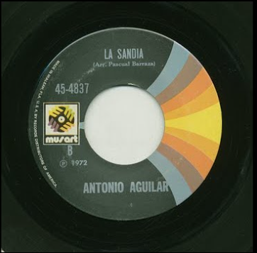
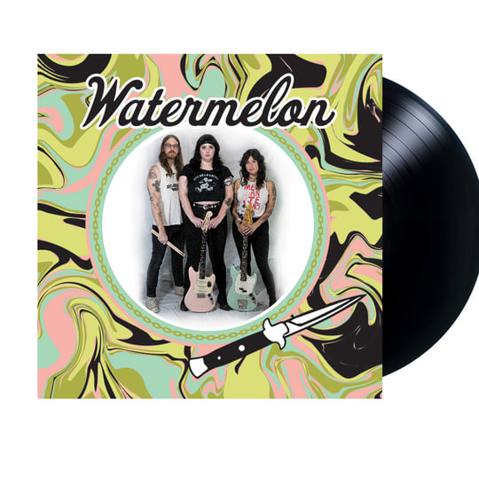

Harry Styles
Presentará en directo su aclamada canción "Watermelon Sugar" para endulzar el festival.
No es un buen día, si no hay sandía.
El evento se basa en un festival que gira entorno a la sandía y su producción, donde habrá catas, concursos de tamaños de sandía y pinta-caras para los niños. Nuestro objetivo es mentalizar a los locales sobre cómo se produce esta fruta en Gran Canaria y concienciar a los más jóvenes sobre la importancia de comer sano.
Presentará en directo su aclamada canción "Watermelon Sugar" para endulzar el festival.
Interpretará el clásico tema "La sandía", aportando un toque tradicional al evento.

Nos deleitarán con su famosa "Watermelon song" para continuar con la temática de nuestra fruta favorita.

| Hora | Actividad | Escenario o lugar | Duración |
|---|---|---|---|
| 13:00 | Pinta caras de sandía y otras frutas a elección | Plaza de San Gregorio | 1 hora |
| 14:00 | La carrera de la sandía (Correr con dos sandías en la espalda) | Plaza de San Gregorio | 1 hora y 30 minutos |
| 15:45 | Demostración de cómo se cultiva y cuida una semilla de sandía | Plaza de San Gregorio | 1 hora y 15 minutos |
| 17:00 | Formas de comer una sandía o prepararla para algún plato | Plaza de San Gregorio | 1 hora y 15 minutos |
| 18:15 | Clase de historia sobre la llegada de la sandía a Canarias | Plaza de San Gregorio | 45 minutos |
| 19:00 | Gran degustación de sandías locales | Plaza de San Gregorio | 1 hora |
Para la participación en nuestras actividades, el formulario recogerá su correo electrónico, número de teléfono, nombre completo y fecha de nacimiento. Estos datos personales se utilizarán exclusivamente para gestionar las inscripciones, asegurar el correcto desarrollo del evento y establecer un medio de contacto ante posibles cambios en el festival.